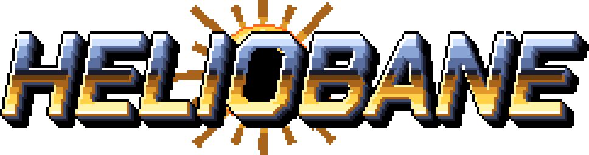
"We built her to kill a star. We never thought we'd have to." · Oda Venn, Solmarch Yards
「星を殺すために造った。本当に使う日が来るなんてね。」 オダ・ヴェン、ソルマーチ造船所
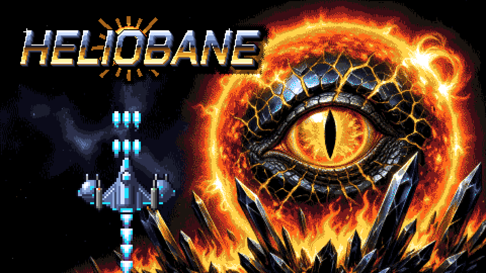
| Developer | Gand, Istanbul & Tokyo (est. 2025) |
|---|---|
| Publisher | Gand (self-published) |
| Genre | Vertical-scrolling shoot 'em up |
| Platforms | Windows, Linux, SteamOS / Steam Deck |
| Store | Steam (app 5328670) |
| Demo | Free: the opening stages of World 1 |
| Release date | Not announced |
| Price | Not announced |
| Languages | English, Türkçe, 日本語 (text and voice) |
| Engine | Godot 4.7 |
| Website | heliobane.gand.games |
| Press contact | contact@gand.tr |
HELIOBANE is a vertical shoot 'em up in the tradition of the Amiga's Tyrian and Xenon 2. Wren, a salvage runner with the best reflexes in the system, flies HB-0 Heliobane, a prototype built to survive inside a star, against the Umbrine: a crystalline hive that woke up inside the sun Aurel and has already eaten two worlds and the whole Concord battle fleet.
Her guns were never meant for a war, so she strips better ones off the dead and buys the rest from Old Mott, a trader who turns up between stages in a salvage tug called the Magpie and calls her kiddo. Three worlds, fifteen stages, fifteen screen-filling Heralds.
It looks and sounds like 1993 (320×256 pixels, 32 colours, a tracker soundtrack, 8-bit digitised speech) and plays like a shooter made now: a locked 60 fps, a 4-pixel hitbox, remappable controls, full gamepad support.
Download the trailer (83 s, 1920×1080, 60 fps, H.264, 62 MB) · English captions (.srt)
HELIOBANE started on 24 September 2026 from a one-paragraph brief by Arda Karaduman: a retro shoot 'em up like the Amiga classics, Tyrian 2000 and Xenon 2 named outright. The name, the lore and the design document were written that morning.
AI was used to generate some of the game's assets: artwork, voice lines, sound effects, in-game text and translations. Artwork was edited and fitted to the game's 32-colour palette and style. The soundtrack was made with a custom tracker built for agentic work, by an AI trained on a curated collection of public-domain tracker (MOD) music. The Steam page and a free demo are in preparation.
| 開発 | Gand（イスタンブール・東京、2025年設立） |
|---|---|
| 販売 | Gand（セルフパブリッシング） |
| ジャンル | 縦スクロールシューティング |
| プラットフォーム | Windows、Linux、SteamOS／Steam Deck |
| ストア | Steam（アプリ 5328670） |
| 体験版 | 無料：ワールド1の序盤ステージ |
| 発売日 | 未発表 |
| 価格 | 未発表 |
| 対応言語 | 日本語、英語、トルコ語（テキスト・音声とも） |
| エンジン | Godot 4.7 |
| 公式サイト | heliobane.gand.games |
| 取材窓口 | contact@gand.tr |
HELIOBANE（ヘリオベイン）は、アミガの『Tyrian』や『Xenon 2』の流れをくむ縦スクロールシューティング。星系一の反射神経を持つサルベージ屋のレンが、恒星の中でも耐えられるよう造られた試作戦闘艇 HB-0 ヘリオベインを駆り、太陽オーレルの奥で目覚めた結晶の群体アンブラインに挑む。アンブラインはすでに二つの世界とコンコード艦隊のすべてを呑み込んだ。
ヘリオベインの武装は戦争を想定していない。だからレンは倒した敵から銃を剥ぎ取り、足りない分は、ステージの合間にサルベージ船「マグパイ号」で現れて彼女を「嬢ちゃん」と呼ぶ商人、オールド・モットから買う。3つのワールド、15のステージ、画面を埋め尽くす15体のヘラルド。
見た目と音は1993年そのもの（320×256ドット、32色、トラッカー音楽、8ビットのデジタイズボイス）。遊び心地は今のシューティングで、60fps固定、4ドットの当たり判定、キー配置の変更、ゲームパッド完全対応。
トレーラーをダウンロード（83秒、1920×1080、60fps、H.264、62 MB。画面内の文字と音声は英語）
HELIOBANE は2026年9月24日、Arda Karaduman が書いた一段落の企画メモから始まりました。アミガの名作のようなレトロシューティングを、と『Tyrian 2000』と『Xenon 2』を名指しで挙げたものです。タイトル、世界設定、企画書はその日の朝に書かれました。
ゲームのアセットの一部（アートワーク、ボイス、効果音、ゲーム内テキスト、翻訳）は AI で生成しました。アートワークには手を加えて、32色のパレットとゲームの画風に合わせています。音楽は、エージェントによる制作向けに作られた独自のトラッカーを使い、厳選したパブリックドメインのトラッカー（MOD）音楽で学習した AI が制作しました。Steam ストアページと無料体験版を準備中です。
Real in-game captures at the game's own 320×256; click for the 1280×1024 (×4) file. The steam-screenshots/ folder has 1920×1080 versions.
すべて実際のゲーム画面（320×256）。クリックで 1280×1024（4倍）の画像を開きます。1920×1080 版は steam-screenshots/ にあります。
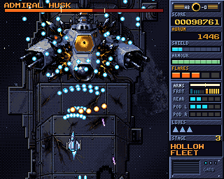
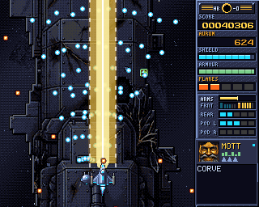
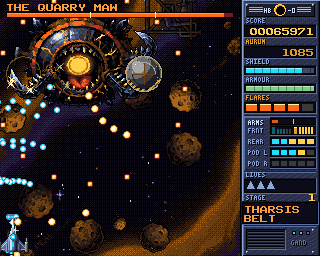
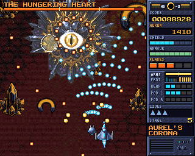
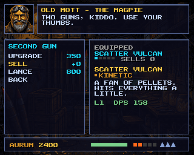
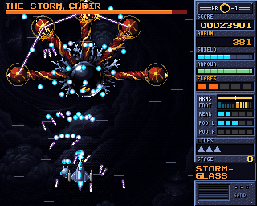
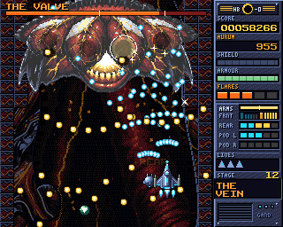
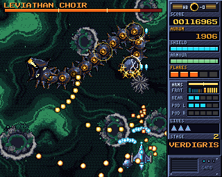
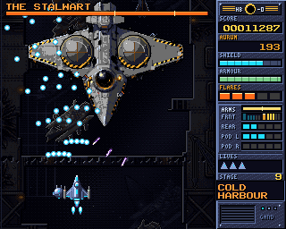
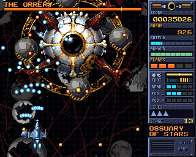
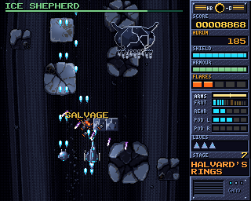
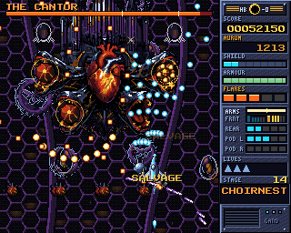
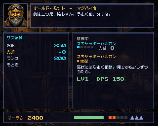
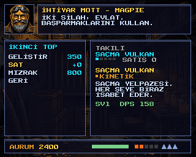
The zip below holds all 26 captures in screenshots/, including the First Mouth (the final Herald), a flare, the title screen and Japanese/Turkish versions.
下の ZIP の screenshots/ にはほかに、最終ヘラルド「ファースト・マウス」、フレア、タイトル画面、日本語・トルコ語版など全26枚があります。
Pixel art is scaled by whole numbers only. If you resize, use nearest-neighbour, or start from the ×1 files.
ドット絵は整数倍でのみ拡大しています。サイズを変える場合はニアレストネイバー法で、または等倍ファイルからどうぞ。
Gand is an independent studio that builds and runs its own software and games from Istanbul and Tokyo. Its other game on Steam is COMMIT!!!, a software-career sim. No ads. No tracking. No exit strategy.
Gand は、イスタンブールと東京を拠点に自社のソフトウェアとゲームを作り、運営している独立系スタジオです。Steam ではソフトウェア開発者人生シミュレーション『COMMIT!!!』も配信中。広告なし、トラッキングなし、イグジットなし。
| contact@gand.tr | |
| Game | heliobane.gand.games |
| Studio | gand.tr · gand.games |
| Bluesky | @gand-tr.bsky.social |
| Mastodon | @gandtr@mastodon.social |
| YouTube | @Gand-tr |
| GitHub | github.com/gandtr |
{kind=link}
{kind=link}
{kind=link}
{kind=link}
{kind=link}
{kind=link}
{kind=link}
{kind=link}
{kind=link}
{kind=link}
{kind=link}
{kind=link}
{kind=link}
{kind=link}
{kind=link}
{kind=link}
{kind=link}
{kind=link}
{kind=link}
{kind=link}